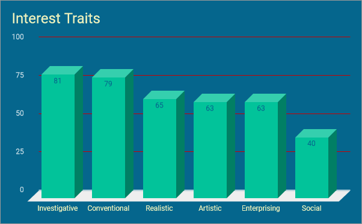

All about me!
Everything about Wasay Saeed
Learning Style
My Learning Styles represent me because it shows how I react to different modes of information and different social situations.
Multiple Intelligences
My intelligences represent me because of how they represent my talents and how those talents align with my aspirations and personality. My intelligences in order are:
I enjoy math a lot and love logical activities such as coding, which is why i made a website. I am very knowledgeable about my own limitations, I just choose to believe they don't exist, and know what I aspire to become. I find visualizing a concept makes it easier to interpret. I'm very adept at solving spatial problems thanks to my fondness of rubik's cubes. I find it difficult to function in groups thanks to my introvertedness. I am very at loss when it comes to words, music and nature and I generally don't like those activities.
Left vs Right brain
{kind=link}
I am fairly left brained but I will admit that there are portions of me that are heavily right sided. I take part in and enjoy all of the activities I mentioned above and I find myself very passionate about those activities. I think that the left brained part of me transfers into my personality and in the activities that I take part in that are more right brained I take a more logical and 'left-brained' approach to them such as focusing on what logically is pleasing to the eye.
Introverted vs Extroverted
I am evenly split as an introvert and an extrovert, where I find that I have an urge to talk to people but also find it pleasant to have some time to myself and reflect and think about my own ideas. I think that I could be extroverted depending on who I'm talking to, if I'm talking to an introvert I find myself more outgoing but with an extrovert more timid. I personally want to be more outgoing and extroverted so I try to assert myself in situations that allow me to work on my speaking and interpersonal skills.
Green Colour
{kind=link}
{kind=link}
My colour personality is green which means that I am very logical, ordered and structured. I don't work well in groups and don't work very well in relating to others' emotions. I, as a green, prioritize certain traits such as logical arguments as well as activities that are intellectually stimulating as opposed to activities that involve physical activities or require emotions. I value perfection and reading as an introverted activity. I value science and logical activities, as well as introverted activities.
{kind=link}
Types of personalities
16 Personalities
My 16 personalities test concludes that I am an ISTJ. I agree with this because I am, arguably, introverted, I can be empathic and I think very crucially on topics that interest me while being judgemental and suspicious of most of people's actions.
Myers-Briggs
The Myers-Briggs Test had concluded that I was an INTJ -T. I agree with this because of the fact that I am partially introverted, I rely on my intuition often, I think very often about different big issues and am very judgemental.
Differences
The differences between the Myers-Briggs and the 16 Personalities test are that I am a sensing person instead of a thinking person, I think that I am more of an intuitive personality but that is a biased view of me, I want to believe that I am completely rational and logical but I have morals and empathy and when given the occasion I can relate to people's troubles. The similarites I believe strongly represent me, I think that I am a coin toss between introverted and extroverted but when deciding which is more prominent, I would definitely choose introverted. I am definitely judgemental as opposed to perceiving because I want to more reactive when it comes to life so I take a more proactive approach to life.
My interest type
I am a technician, which means that I have certain traits that are related to logic and structure. My interest traits below, ranked based on how well I resonate with them, show how I am more inquisitive and organized than I am artistic and social. In essence, it shows how I prioritize more on hard skills than soft skills.
I like to work with
- ideas
- information
- machines
- tools
The ways I approach things are that I
- focus on independence
- require structure and routine
- blur together plans and actions
- prefers to think than trust exterior resources
Activities that represent me